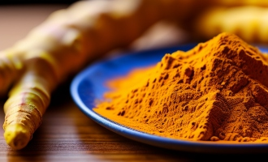
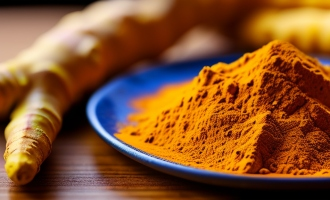

Lo que puedes hacer para una buena salud digestiva: aquí hay 3 tés que puedes probar
Observa tus hábitos saludables y pregunta sobre tus alimentos y de dónde provienen. Te enfocas en tu bienestar físico y mental, corres regularmente por el cañón y disfrutas de estar activo. ¡Felicidades, has dado grandes pasos hacia tu salud y bienestar digestivos!
Tu estilo de vida tiene mucho peso: ¿mantienes una mentalidad positiva cuando las cosas se complican durante el día, sigues consumiendo alimentos nutritivos y bebes suficiente agua durante todo el día?
Hay mucho que puedes hacer para contribuir a tu salud digestiva, sentirse bien y vivir una vida saludable. debes saber que incluso las pequeñas elecciones de estilo de vida a la vez pueden hacer avanzar la aguja.
Por lo tanto, la próxima vez que te subas a una plataforma y disfrutes de las impresionantes vistas del cañón y las cálidas luces del amanecer, debes sentirte satisfecho con tu estilo de vida y las decisiones que tomas para tu cuerpo.
Pero, ¿cómo llegas allí? Aprendamos sobre los componentes básicos de una buena salud digestiva.
¿Qué es la salud digestiva y por qué es importante?
tu sistema digestivo es responsable de descomponer los alimentos después de haber comido, trabajando diligentemente para que el proceso sea fluido y te permita absorber o utilizar los nutrientes.
tu tracto digestivo abarca una variedad de órganos que comienzan con tu boca , donde la saliva se mezcla con la comida para comenzar a descomponer las partículas de comida. Por lo tanto, la buena salud digestiva puede verse afectada por todos los órganos involucrados.
Cuando traga, la comida viaja al esófago y se asienta temporalmente en el estómago , donde el ácido estomacal descompone la comida y comienza oficialmente la digestión.
El intestino delgado muy largo descompone aún más los alimentos y comienza a ayudar a absorber los nutrientes y luego los libera en el torrente sanguíneo. El intestino grueso , a su vez, absorbe gran parte del agua que queda de cualquiera de los restos de comida descompuesta. Eventualmente, la comida restante sin digerir es expulsada del cuerpo.
¿Por qué es esto importante, te preguntarás?
Deseas asegurarte de que tu cuerpo obtenga todos los nutrientes que necesita para realizar sus funciones diarias. Esto también significa que deseas comer una dieta versátil, para que tu cuerpo pueda obtener los nutrientes necesarios, incluida suficiente fibra dietética en primer lugar.
Para una buena salud digestiva, permite que tu cuerpo tenga todos los recursos que necesita para completar el proceso de digestión con facilidad, ya que involucra muchos pasos y paradas.
¿Qué puede contribuir a tu salud digestiva?
Puedes tomar el asunto en tus manos e incorporar pequeños ajustes positivos en tu estilo de vida que pueden marcar una gran diferencia en tu salud digestiva. Esto es exactamente lo que queremos decir.
Ya sea tu dieta o la forma en que vives, analiza tus hábitos y elecciones y determina cómo puede impactar positivamente tu salud digestiva. A continuación se presentan algunas preguntas a considerar:
- ¿Qué tipo de alimentos como?
- ¿Consumo una variedad de diferentes alimentos y nutrientes?
- ¿Me mantengo lo suficientemente hidratado a lo largo del día?
- ¿Muevo mi cuerpo lo suficiente?
Todos estos factores van de la mano, creando un mosaico con numerosas piezas que deben unirse para obtener una imagen perfecta.

Tés para la digestión: estos son los tés que debe probar
¿Listo para una lista de tés acogedores que pueden ser un invierno delicioso? Sin más preámbulos, echemos un vistazo a 3 tés que puedes beber y que se han usado tradicionalmente para la digestión.
-
Té de jengibre
-
Té negro
-
Té de manzanilla
El jengibre tiene un sabor muy particular, es cierto. Y puede que solo lleve un tiempo acostumbrarse: la dulzura picante con un toque picante es definitivamente única. Pero es exactamente esta combinación única de sabores lo que hace que el té de jengibre sea tan especial. Y se pone mejor: ¿sabías que se cree que el jengibre es útil para la digestión? Sí, es un té que deberías agregar a los libros. Es probable que el jengibre sea originario del sudeste asiático. Ha sido una hierba extremadamente popular desde la antigüedad y se extendió gradualmente desde China e India a los países del Mediterráneo.
¿Qué más puedes hacer por tu salud digestiva? Beba más té, por supuesto, como el té negro, por ejemplo, que tiene un sabor terroso característico y lo ayudará a mantenerse hidratado. El té negro también es un té del sudeste asiático, pero no dejes que eso te engañe. Ha cruzado innumerables fronteras y también es popular en Oriente Medio y el norte de África. Las mezclas de té negro también han alcanzado una gran popularidad en Europa y en toda América del Norte. Puede beber té negro frío o caliente, lo que lo convierte en un excelente té para beber durante todo el año, independientemente del clima.
Cuando piensas en manzanilla, piensas en paz y tranquilidad, tranquilidad. La manzanilla definitivamente no tiene un sabor fuerte, pero aun así está en nuestra lista de tés que debería considerar beber. La manzanilla crece naturalmente en varios continentes, incluidas las partes más cálidas de Europa y el sudeste asiático. La manzanilla tiene un sabor muy suave pero aromático que ya llamó la atención de los antiguos egipcios hace muchos milenios.
¿Estás listo para agregar nuevos hábitos a tu vida?
¿No nos esforzamos todos por vivir una vida feliz y saludable? Queremos ayudarte en tu viaje hacia una mejor versión de ti mismo. No siempre es fácil incorporar nuevos hábitos saludables y, a veces, toma tiempo ver qué es lo mejor para tu bienestar. ¡Todos hemos estado allí!


 
